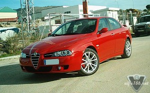
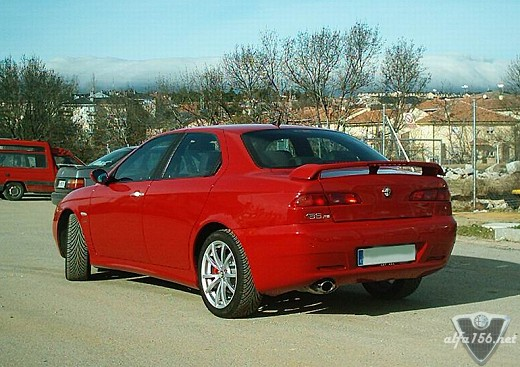
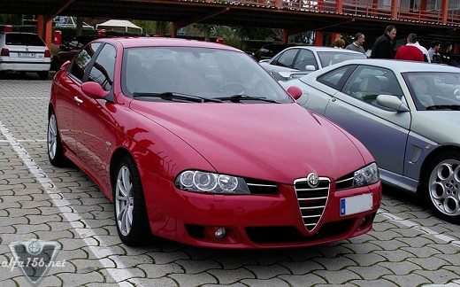
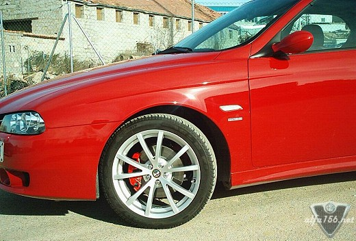

|
| .: 156 Owners profile, March 2005 :. |
| Name: Jose Lombardia Forum nick: ¥--Lombar--¥ Age: 42 Gender: Male Location: Alpedrete, Madrid, Spain Occupation: : Mobile TV Unit’s Technician. |
 |



| .: 156 Owners profile, March 2005 :. |